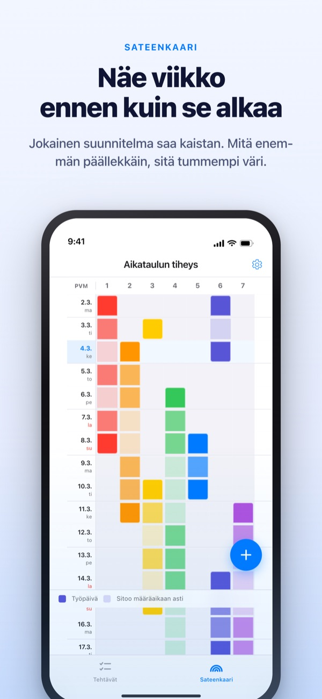
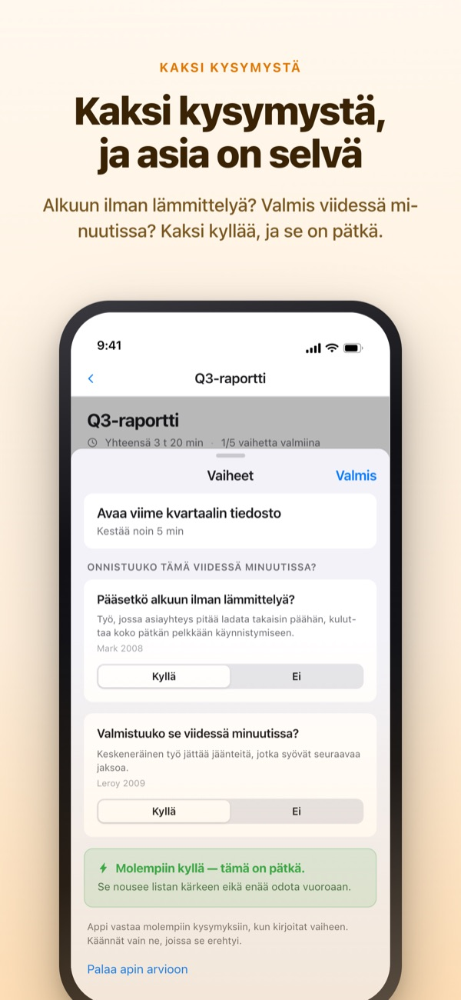
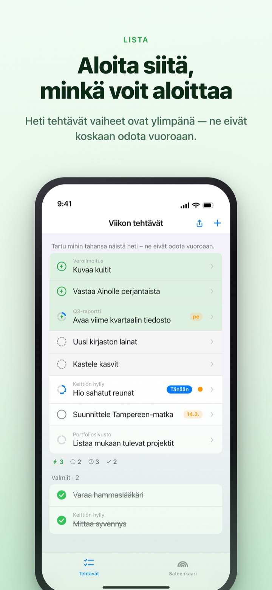
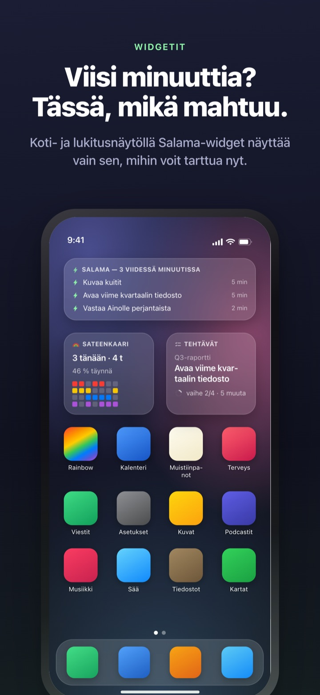

Näe raskas viikko ajoissa.
Käytä vapaat viisi minuuttia.
Mitä enemmän työt menevät päällekkäin, sitä syvemmäksi sateenkaari värittyy. Pilko iso tehtävä vaiheiksi, niin raossa tehtävä vaihe odottaa jo ylimpänä.
Sateenkaari, tehtävien pilkkominen, ajastin ja synkronointi Macin kanssa ovat ilmaisia.

Kokeile itse
”Q3-raportti” on jo pilkottu viiteen vaiheeseen. Valitse vaihe, muuta aikaa tai käännä vastaus. Vain vaihe, joka saa kaksi kyllää, on pätkä, jonka teet viidessä minuutissa.
Kalenteri näyttää tyhjältä, mutta viikko vie silti hengen?
Kalenteri kertoo, onko jotain sovittu, ei sitä, kuinka paljon päällä on. Sen, että kolme määräaikaa osui samalle viikolle, huomaa usein vasta keskellä viikkoa, ja väliin jäävät viisi minuuttia kuluvat tehtävälistan selaamiseen. Rainbow of Desire piirtää viikon ruudukoksi, tummentaa päällekkäisyydet ja nostaa sivuun vaiheet, jotka mahtuvat rakoon.
Kaksi kysymystä ja asia selviää
Kun pilkot ison tehtävän, jokainen vaihe saa kaksi kysymystä. Pääsetkö alkuun ilman lämmittelyä? Valmistuuko se viidessä minuutissa?
Vain kaksi kyllää tekee siitä pätkän. Appi vastaa ensin ajan ja sanojen perusteella, ja sinä käännät vastauksen vain, kun se on väärä.

Rako tuli? Katso ylintä
Pyyhkäise tehtävä oikealle ja anna sille salama, niin se ohittaa jonon ja nousee ylimmäksi. Koko listaa ei tarvitse lukea.
Odottavatko vaiheet toisiaan, päätät kerran ryhmää kohden. Järjestyksessä näyttää ensimmäisen keskeneräisen vaiheen, Vapaa järjestys pätkän, jonka voit ottaa nyt.

Näkyy avaamatta appia
Ajastin laskee siihen hetkeen, kun tapahtuma päättyy, ja jäljellä oleva aika näkyy myös Dynamic Islandissa ja lukitusnäytöllä.
Koti- ja lukitusnäytön widgetit näyttävät, mitä teet nyt, mikä mahtuu viiteen minuuttiin ja tämän viikon sateenkaaren. (Widgetit kuuluvat Pro-tasoon)

Alkuun kolmessa vaiheessa
- 1
Vedä tapahtuma
Paina pitkään tyhjää ruutua alkupäivänä ja napauta loppupäivää. Sateenkaareen ilmestyy viiva.
- 2
Pilko isot tehtävät
Napauta tehtävää, kirjoita vaiheet ja valitse aika. Kahteen kysymykseen appi vastaa ensin.
- 3
Raossa katso ylös
Pätkät ja salamalla merkityt tehtävät kerääntyvät ylös vuoroa odottamatta.
Mitä näet näytöllä
- Tumma ruutu · vaalea ruutu
- päivät, joina oikeasti teet asiaa, ja loppujakso päättymispäivään asti
- Täysi rivi
- päivä, jona niin moni asia on käynnissä, että yksi viivästys siirtää koko päivää
- Pätkä
- kyllä kumpaankin kysymykseen; ota, kun sinulla on viisi minuuttia
- Lyhyt jakso
- ei lämmittelyä, mutta ei valmistu pätkässä; hoituu yhdellä istumalla
- Jakso
- vaatii lämmittelyn tai kestää vähintään 45 minuuttia; kuuluu varattuun aikaan
- Salama
- oma ”heti”-merkkisi; nousee ylimmäksi
- Järjestyksessä · Vapaa järjestys
- odottavatko vaiheet toisiaan, asetetaan kerran ryhmää kohden
- Tilikirja
- viikon tilinpäätös: jäljellä oleva, takaisin saatu aika ja palautuminen erikseen, koskaan yhteen laskematta
Aika summautuu alhaalta ylös: tehtävän aika on sen vaiheiden summa.
Kaikki tähän päivään tarvittava on ilmaista
Ilmainen
- Sateenkaari (aikataulun tiheysruudukko)
- Tehtävien pilkkominen vaiheiksi ja kaksi kysymystä
- Salama ja vaiheiden järjestys
- Ajastin Dynamic Islandissa ja lukitusnäytöllä
- Synkronointi Rainbow Craftin kanssa Macilla iCloudin kautta
- Kahden viime viikon tilikirja
Rainbow Plus · Rainbow Pro
- Plus: tapahtumatilastot ja tilikirja kahta viikkoa kauemmas
- Pro: kaikki Plussasta sekä koti- ja lukitusnäytön widgetit
- Pro: tuonti kalenterista ja jatkuva näyttö
- Pro: tapahtumien jakaminen vain luettavaksi
- Pro: avaa myös Rainbow Craft Pron Macilla
Kumpikin vuositilauksena tai kertaostona pysyvästi
Maksat vain menneiden viikkojen tarkastelusta ja asioiden viemisestä appin ulkopuolelle. Jos ostit Pron aiemmin tai sinulla on yhä kuukausitilaus, olet edelleen Pro.
Usein kysyttyä
Tarvitsenko tilin tai iCloudin?
Yksin käyttäessä et. Rekisteröitymistä ei ole, ja kaikki pysyy laitteella. Muita laitteita, Mac-appia tai jakamista varten kirjaudu iCloudiin.
Appi vastasi kysymykseen väärin.
Napauta vaihetta ja vaihda Kyllä tai Ei. Oma vastauksesi menee aina edelle. Napauta ”Palaa apin arvioon”, niin annat päätöksen takaisin. Vaihetta ilman aikaa ei lasketa pätkäksi, koska appi ei tiedä, valmistuuko se viidessä minuutissa.
Voinko jakaa muiden kanssa?
Kutsulinkillä jaat tapahtumasi vain luettavaksi (Pro) tai avaat tehtävälistan, jota sinä ja kutsutut luette ja muokkaatte yhdessä. Kuka tahansa linkin saanut voi liittyä, joten lähetä se vain oikeille ihmisille. Sillä ei ole tekemistä Applen Perhejaon kanssa.
Näkyvätkö kalenterini tapahtumat?
Valitsemiesi kalenterien tapahtumat näkyvät sateenkaaressa ja päivänäkymässä (Pro). Appi vain lukee niitä eikä kirjoita mitään takaisin.
Voinko kuitata widgetistä?
Widgetit ovat vain katseltavia. Napauta widgetiä, niin tehtävät aukeavat suoraan, ja kuittaa siellä.
Ostetaanko Mac-appi erikseen?
Rainbow Craft on erillinen macOS-appi Mac App Storessa. Samalla iCloud-tilillä tehtävät ja viikkosuunnitelmat synkronoituvat itsestään, eikä se maksa mitään.
Ovatko vanhat tehtäväni tallessa?
Ovat. Tehtävät, vaiheet ja asettamasi ajat säilyvät. Vanhojen aloitusehtojen tunnisteet appi arvioi uudelleen kahdella kysymyksellä.
Mihin tietoni tallennetaan?
Palvelinta ei ole. Kaikki on laitteellasi ja omassa iCloudissasi, jonne kehittäjä ei näe. Ei mainostunnistetta, ei sijaintia. Appi lähettää vain nimettömiä käyttötilastoja, joista sinua ei tunnista ja jotka voi laittaa pois Asetuksista.
Miten peruutan tilauksen?
Asetukset > Apple-tili > Tilaukset. Tilaus uusiutuu samaan hintaan, ellet peru sitä viimeistään 24 tuntia ennen jakson päättymistä. Pysyvä osto maksetaan kerran.
Jäikö jokin jumiin tai näyttääkö jokin oudolta? Kirjoita osoitteeseen leeo@kakao.com. Yhteydenottovalinta löytyy myös appin asetuksista.